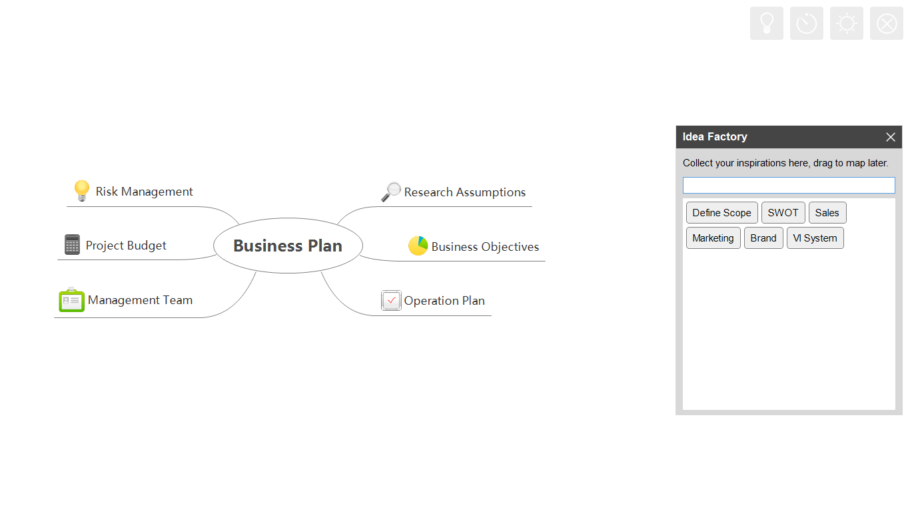
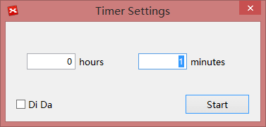

Brainstorming
With XMind, you can start the individual brainstorming easily and quickly.
The most important thing of brainstorming is to focus on the quantity, not the quality. So we bring the Idea Factory to record and collect inspirations further and faster. A timer stays to let us control the brainstorming session time. Additionally, you can switch between day mode and night mode.
Brainstorming EditorWhen entering the brainstorming mode, we will be brought a full screen editor. Here we can focus on the idea, and record our inspiration and sparkles without distractions.
* Click "View - Brianstorming"/Press "F5" to enter brainstorming editor.
More than that, the redesigned brainstorming feature enables us to generate ideas creatively. There are four buttons, at the upper right corner of the editor view, to make it possible.
Idea FactoryIdea Factory is a floating dialog to record your ideas smoothly. We just need to type the ideas one by one, which have jumped into our brain. Then we can focus on organizing the ideas directly by dragging and dropping them on our mind when it's done.
- Click the Idea Factory icon at the upper right corner
- Type our ideas, and press "Enter"
- Drag and drop the ideas to your mind map
Notes:
- The left ideas within Idea Factory will stay there when XMind is reopened.
- Select the ideas and press "Delete" to delete the ideas in Idea Factory.
- Press "Ctrl+Z" can undo the operation above
Too many ideas may be another dangerous thing. To stimulate our creativity and limit the ideas amount, we'd better define the duration before the brainstorming.
- Click the "Timer" icon at the upper right corner
- Set the time and Di-Da audio effect on the coming dialog 
- Move the mouse to the timer. Then we can stop the timer, and turn off the audio effect.
Sometimes, black text on a white background can't stimulate your creativity, or can't match your aesthetic. If that's the case, you can switch into Night Mode, which inverts the color.
- Click the sun icon at the top right of the corner to enter night mode
- Click the moon icon
 at the topic right of the corner to quit night mode
at the topic right of the corner to quit night mode
Quit
:Click the Quit icon to quit brainstorming mode